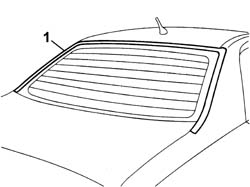
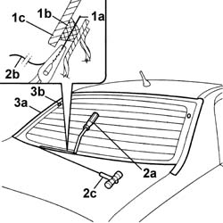
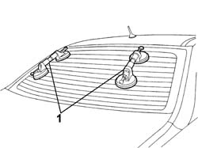
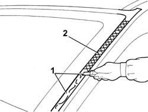
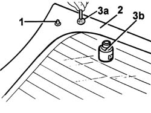
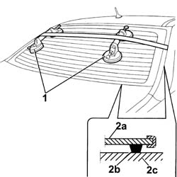

7035B14 Rearscreen (bonded) GLASS - R.R. for Replacement - Includes cleaning housing in bodyshell
- Path
- Procedures > 70 FITTINGS > 7035 BODY WINDOW GLASSES > 7035B REARSCREEN > 7035B14 Rearscreen (bonded) GLASS - R.R. for Replacement - Includes cleaning housing in bodyshell
- Kind
- repair procedure (removal / refitting; the operation number is the code)
- Applies to
- all engines; all production periods
- Interactive page
- https://sloeber94.github.io/elrnDB-lThss/en/#/80338
Applies to: all engines; all production periods
 Removing
Removing
 Refitting
Refitting- Disconnect the negative battery terminal.
See in Op. 7050A20 Single rear seat cushion - R.R.
-
See in Op. 7050A19 REAR SEAT BACKREST - R.R.
-
See in Op. 7040H46 Left or right rear pillar upper trim (one) - R.R.
See in Op. 7040B21 Luggage compartment upper TRIM - R.R.
See in Op. 7040H80 REAR PARCEL SHELF - R.R.
- Disconnect the heated rear windscreen electrical connections.
- Keep the roof lining a suitable distance away from the rearscreen.
- Release the rear side door housing seal, on both sides, as much as necessary.
1. Release the heated rear windscreen outer seal and remove it.

Applies to: all engines; all production periods
- Thoroughly clean the area of the bodywork surrounding the rearscreen and protect it using adhesive tape.
1. Cut a length of wire of about 50 cm then, with the help of pliers, introduce one end (1a) of the wire through the bead of sealant (1b) securing the rearscreen (1c).
2. Fasten one end (1a) of the wire to the special retaining tool (2a) located inside the vehicle. Fasten one end (2b) of the wire to the traction handle (2c) located outside the vehicle.
3. The mechanic inside the vehicle should keep the end of the tool (2c) on the bead of sealant (3a) about 30 cm from the point where the wire passes through.
3. The other mechanic, outside the vehicle, should pull the handle (2c) following the surround of the rearscreen and they should cut the bead of sealant (3a).
3. Repeat the operation in sections of about 30 cm until the bead of sealant (3a) is completely cut.
3. Take care when cutting over the rearscreen side centering pins (3b).

Applies to: all engines; all production periods
1. Fit the suction pads to the rearscreen then, with the assistance of a second mechanic, remove the rearscreen and rest it on a stand.

Applies to: all engines; all production periods
Refitting
Removing1. Using suitable equipment, cut and level the bead of sealant in the rearscreen housing leaving a thickness of between 0.25 and 1 mm, taking care not to scratch the paintwork.
2. Thoroughly clean the rearscreen housing using an air jet and degrease fully using heptane.
- When bonding, 60 minutes after the bead of sealant has been cut and levelled, the surface of the actual sealant must be treated using the special activating product and it is necessary to wait for 15 minutes before fitting the rearscreen.
 | Description | Qty. | Component | Type | Classification |
|---|---|---|---|---|---|
. | PRIMER | - | WINDSCREEN GLASS SEALING STRIP | - | - |
- If necessary, retouch the paintwork.

Applies to: all engines; all production periods
- If the same glass is going to be reused
See in Op. 7035B26 REARSCREEN GLASS - Clean edges and sand small abrasions
-
- If this is not the case, use a new window glass and follow the instructions below.
1. Fit the centering pins and the perimeter seal.
2. Degrease the serigraphed perimeter of the new rearscreen using heptane.
3. Apply the glass adhesion promoter (PRIMER) (3b) to the serigraphed perimeter using the wick (3a) supplied in the Kit.

Applies to: all engines; all production periods
- Remove the adhesive tape from the edges of the bodywork and along the upper and lower perimeters of the rearscreen housing.
Applies to: all engines; all production periods
- Using a spray gun apply a bead of sealant along the perimeter of the rearscreen as evenly as possible.
| Description | Qty. | Component | Type | Classification |
|---|---|---|---|---|---|
. | Product n° 71711976 | - | WINDSCREEN GLASS SEALING STRIP | - | - |
1. Place the rearscreen in the housing, with the assistance of a second mechanic, straight after applying the sealant and let it bed in.
2. Position the belt (2a) and tension it so that even pressure is exerted on the entire rearscreen to ensure that the matching between the glass (2b), sealant (2c) and rearscreen housing (2d) is correct.

Applies to: all engines; all production periods
- Connect the rearscreen electrical connections.
See in Op. 7040H80 REAR PARCEL SHELF - R.R.
See in Op. 7040B21 Luggage compartment upper TRIM - R.R.
See in Op. 7040H46 Left or right rear pillar upper trim (one) - R.R.
See in Op. 7050A19 REAR SEAT BACKREST - R.R.
-
See in Op. 7050A20 Single rear seat cushion - R.R.
-
- Connect the negative battery terminal.
Topics linked from this page (6)
- 7035B26 REARSCREEN GLASS - Clean edges and sand small abrasions
- 7040B21 Luggage compartment upper TRIM - R.R.
- 7040H46 Left or right rear pillar upper trim (one) - R.R.
- 7040H80 REAR PARCEL SHELF - R.R.
- 7050A19 REAR SEAT BACKREST - R.R.
- 7050A20 Single rear seat cushion - R.R.